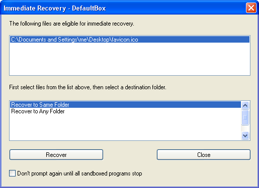
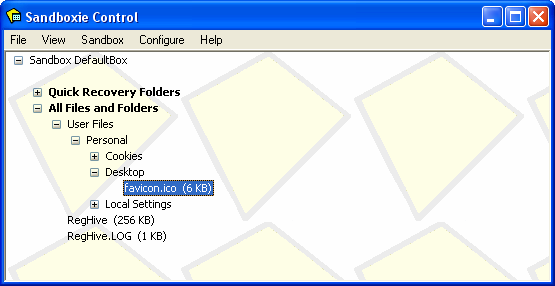
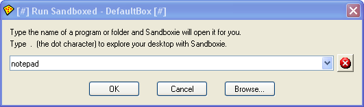
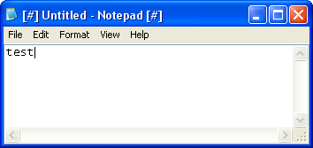
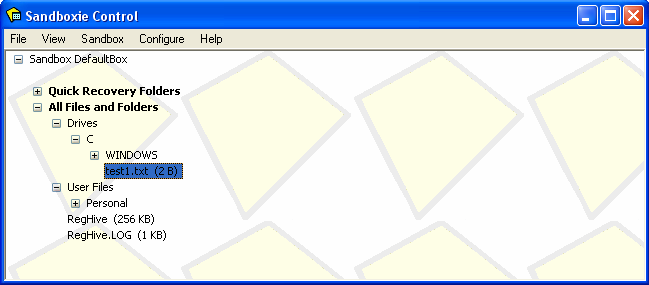

Getting Started Part Three
Part Three: The Sandbox
You should now have your Web browser running sandboxed. It can be Internet Explorer or any other browser.
The browser program may make changes to your computer. These changes will all be trapped in the sandbox.
Try it now. Right-click on the following link, and save the file to your desktop. If you're using Internet Explorer, this is the Save Target As command in the right-click menu. If you're using Firefox, this is the Save Link As command in the right-click menu:
In the default and recommended configuration, Sandboxie will identify that a file was saved to an interesting location -- your desktop, in this case -- and will offer Immediate Recovery for the file:

Because the point of this exercise is to show that files remain in the sandbox unless recovered, click the Close button on the window above, to tell Sandboxie to keep the file in the sandbox.
The file you saved, favicon.ico would appear on your desktop as this icon:
If you minimize all windows and examine your desktop, you should not be able to see the new icon, because the file was in fact saved in the sandbox, and not yet recovered.
Sandboxie Control initially operates in Programs View where it lists the programs running in the sandbox, but you can use the View Menu to switch the view mode to Files And Folders View which shows the contents of the sandbox. Click Files and Folders in the View menu.

Expand the branches (by clicking the + signs) to reveal the contents of the sandbox, arranged into folders. As you can see in the picture directly above, the file favicon.ico that you saved earlier has been placed in the sandboxed desktop folder.
In the same way, any file created by any sandboxed program will be placed in a sandbox folder corresponding to the real folder where it should have been placed.
Let's try this again, this time with a sandboxed Notepad. To do this, use the Run Any Program command:

Sandboxie displays its Run... dialog box. Type notepad:

Notepad should start sandboxed:

Type a few letters into the new Notepad document, and save it as file test1.txt at the root folder of drive C. Then, look for this file in the root folder of drive C. You should not be able to find it. That's because the file was saved in the sandbox:

Summary:
-
Files created or modified by sandboxed programs are initially placed in the sandbox.
-
Files in the sandbox are not visible to programs outside the sandbox.
The tutorial continues in Getting Started Part Four.